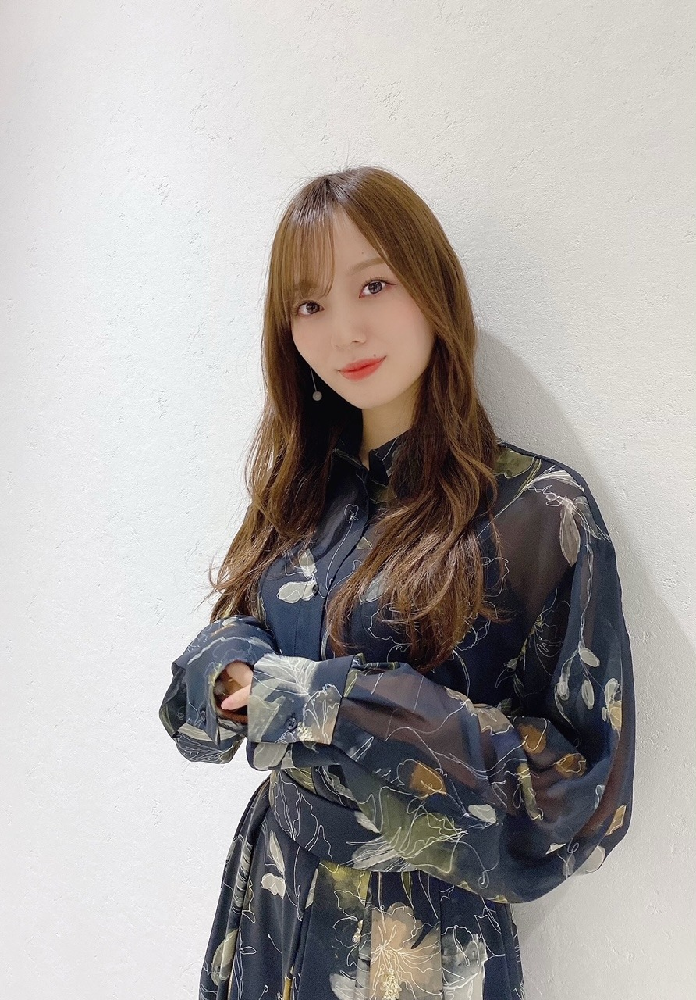
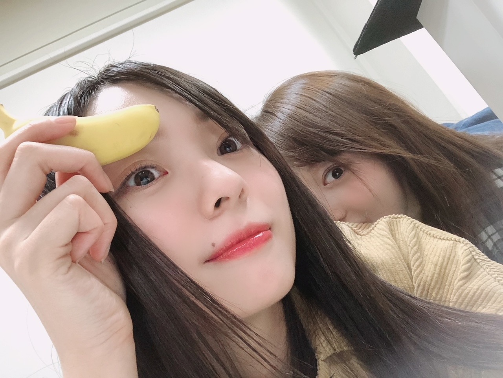
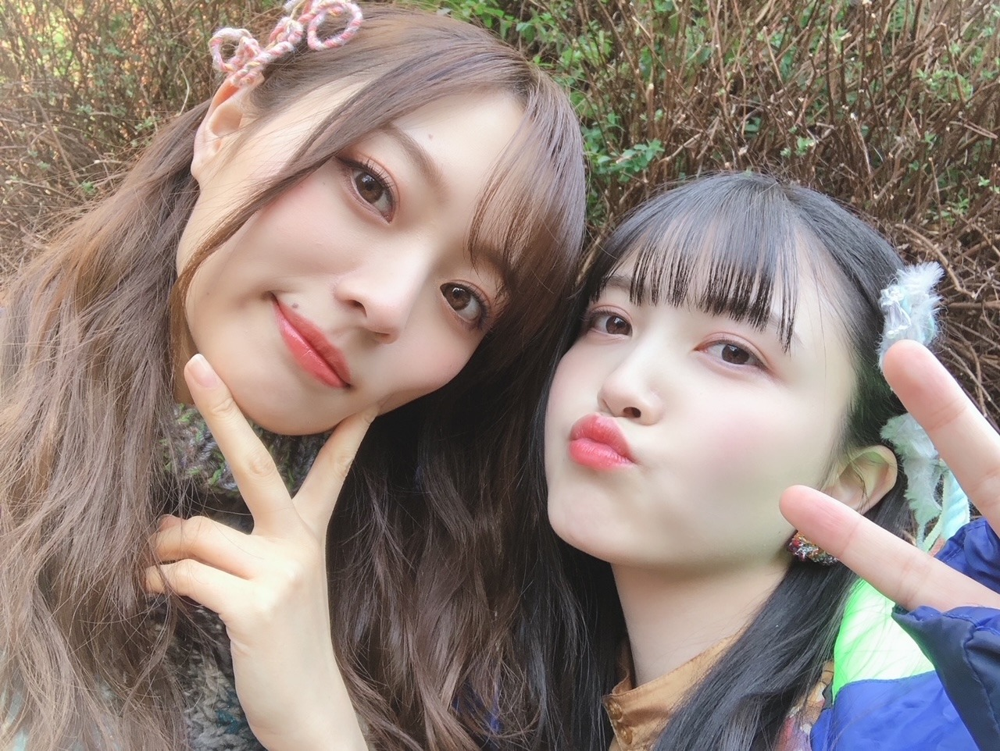
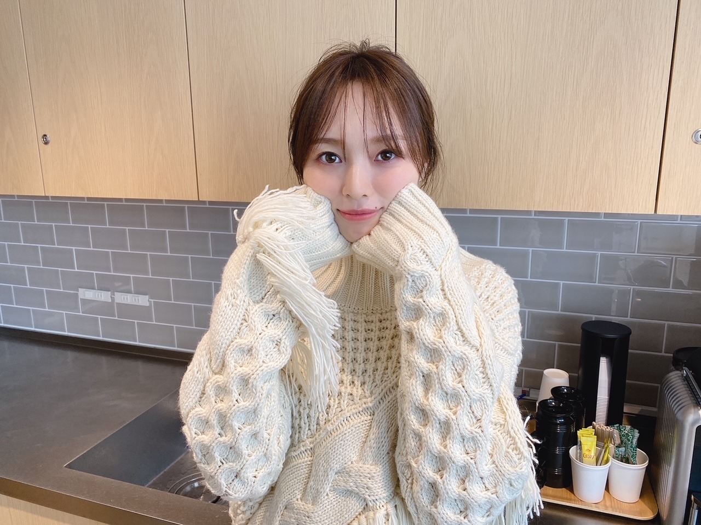
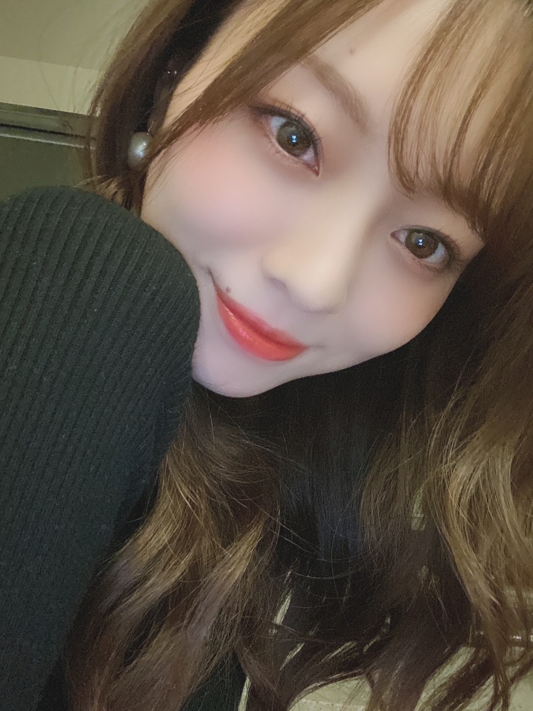

あとすこしの 残り火

オンラインお話会のときのわたしです☀︎
２６枚目シングル、
皆様、いつも暖かい応援
本当にありがとうございます。
今年は
配信という形での楽曲の制作や
握手会はオンラインでの開催になったり
中々思うように活動できない中でも
離れず、待っていてくださった皆様には
本当に、心から感謝しています。
本当にありがとうございます。
加入して４年がたち
５年目を迎えました。
色々経験させて頂きました。
先輩方の背中もたくさん見てきました。
時間も 思うよりずっと経っていました
乃木坂46が大好きで、
尊くて、愛おしくてたまらなくて
大切で、宝物で、人生で。
画面の向こうのキラキラ輝く
乃木坂46というグループに憧れ、
夢中になり
生きる活力をもらっていた存在だからこそ
今感じる重みは凄まじいものですが、
背負う覚悟は出来ています。
自信とか実力とか
自分がどこまでどんな風になれるのかは
未来のことだから誰にも分からないけど
そんな未来の自分を作るのは
今を生きる現在の私であって
いくらでも変えられる希望はあります。
選抜発表されてからの数ヶ月、
時間をたっぷり使い 気持ちの整理をしました。
不安がっていても仕方の無いことです。
ただただ努力して
今やるべきことを精一杯努めるんです。
課題はもう、目の前にあります！
心折れることがあっても
また持ち直せばいい！
何度だって立ち直って
何度だってまた前を向けばいい。
こう思えるようになったのは
今まで経験してきた
全ての時間があったからです☀︎
今までの活動の中で色んなことがありましたが
追い込まれてどうしようもなくなった時こそ
自分ときちんと向き合える瞬間が多い気がしています。
自分の弱さに直面した時
気づけたことがあったり。
弱さを知った時に
物事に対してすごく丁寧になれたり。
悔しくて悔しくて
何が足りないのか欲しいのか考える時間ができたり。
時間が経った今考えれば
あ、あのとき変われた瞬間だったのかー 。と
思えることが多いからです。
誰もが一人ではなく
一緒に泣いて喜んでくれる仲間の存在、
どんな逆境にいようといつも味方でいてくれる家族、
どんなことも受け入れ 理解し 側で寄り添い 守ってくれるファンの皆様、
その存在があれば私は
どこまでも強くなれる気がします︎︎︎︎✌︎
弱い自分とはもう おさらばです！
１０ヶ月ぶりのシングルになります！
２０２０年は 色々なことが起こり
ファンの皆様へ寂しい思いをさせてしまうことも
多々あったかと思います。
そんな過去の悲しみや気持ちを
暖かく包み込めるような楽曲を
皆様にお届け出来たらなと思っています。
どうか、楽しみに待っていてください。
期待していてください。
明日のベストアーティストで
初披露になります。
もう制作は進んでいますが、
ポジションが近い先輩方ともお話したり
４期生のみんなともたくさん話せたり
同期が近くにいてくれたり。
毎日たくさんの笑顔で溢れています。
やま！センターおめでとう☀︎
一人で頑張っちゃうことが出来る子だけど
弱さを出せる場所が私の前であれるように
常に背すじがピンと伸びてしまうような期間になるかもしれないけど
隣を見たらホッと 力が抜けるような存在であれるように
今やまが抱えてる大きい重圧を
少しでも、一緒に持てるように︎︎︎︎✌︎
なにより山下自身が
楽しいと思える期間であってほしいので
私はたくさん一緒に笑いたいです☀︎
笑かそうと思います！！
それが２６枚目シングル、
一つの目標でもあります︎︎︎︎✌︎
久保のシンメ、
わたしは とっても心強いです☀︎
加入してからずっと、何かに取り組む度に
それが良い方向に進むようにと
二人で何度も何度も話し合ってきたなあ。
久保の強さも弱さも全部包み込める人になりたいと私は思います！
何度だって 久保ならできるよ と
声をかけ続けようと思います☀︎
まゆちゃん、れいちゃん、
初選抜おめでとう！
先輩方が私にしてくれたことを
今度は私がする番ですね。
たくさん頼ってもらえるように、
逞しくなるぞ〜！！

やま と ちいさすぎるばなな
去年の写真です

くぼ とぴーす
今年の二月です
今シングルもみんなで、
とにかく楽しく！たくさん笑って！
素敵な楽曲を作っていけたらいいな☀︎
「僕は僕を好きになる」
日に日に好きが増していく楽曲です
大好きで大切なグループへ
少しでも力になれるよう
自分の出せる全てを注ぎ込んで
全力で努めさせていただきます。
皆様、どうぞよろしくお願い致します。

ニットばかりが増える日々です。
輝く！日本レコード大賞にて
「世界中の隣人よ」を
優秀作品賞に選んで頂きました！
ステイホームの期間、
私達に何か出来ることはないかと
心を込めてパフォーマンスさせていただきます。
そして 紅白歌合戦
乃木坂46が出演させていただくことが決定いたしました！
本当にありがとうございます！
2020年最後を締めくくれること、本当に嬉しいですし
いつも応援して下さるファンの皆様へ
今年最後のパフォーマンスをテレビを通してお見せできること
本当に幸せに感じます。
よーし！
今年も最後まで楽しむぞ〜！

引き続きよろしくお願い致します☀︎！
誰かの幸せを願ったり、
誰かの幸せの瞬間に一緒にいられたり、
本当に素晴らしいことだなと 日々実感してます。
ただ、その軸にも
私自身がいることもちゃんと忘れずにいたいなあと 思えるようになりました。
私の幸せが誰かの幸せに繋がることがあって、
ならば自分自身が自分の幸せを尊重してあげる瞬間が少しあってもいいのかなって。
ちゃんと幸せを感じて
周りの人も、自分のことも大切にしてあげられる期間にもなればいいなと思っています。
すごくすごく大切なことを
忘れかけていた気がして。
どんな声もしっかり受け止め、
前を向いて笑顔でいます！
つらつらと読みにくい言葉を並べてしまいました、、
Original：https://www.nogizaka46.com/s/n46/diary/detail/58833?ima=4936&cd=MEMBER